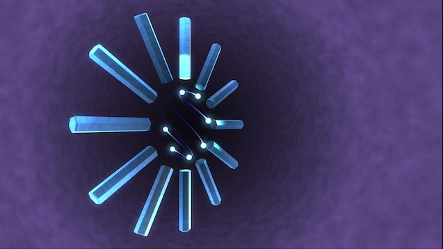

For this assignment, I was instantly inspired to make something similar to the PlayStation 2 (PS2) internal clock. The clock appears when the user goes to the menu of the PS2. The clock is infamous for going over the head of users, a lot of users never put two together and interpreted the clock as an actual clock that tells time. Although the PS2 has advanced mechanics, particularly the way it displays the seconds with multiple orbs that orbit in accordance the system's counter of seconds, I still want to create something similar particular with the way the clock displays hours and minutes. Just like a normal clock, my intention was to create two different "dials" for the minutes and hours, where each hour or minute space (minutes are displayed in 5 minutes, 20 mins would land on the 4) has their block fill up in according to the how much is left before the next block is activated. This allows the clock to give a rough estimate of the actual time, by displaying how much the hour has progressed and how much the 5 minute mark progresses. .
To get this working, I had to use to create function that draws the different dials, where the parameters measures the radius of the block placements, length of the blocks, thickness of the blackness, what block is currently being lit, how much the block is being filled, and the colors of the block, since PM is showcased by the color red and AM is showcased by the color blue. There are two main principles that each dial follows, the block and fill. The block determines what block is lit, and the fill determines how much of the current block is filled. The minute and hour dial has different ways to calculate such principles. For the hour, the current hour that system has is moduled by 12, since it is a 24 hour clock, the reminder will land on the corresponding block within the dial. The fill is determined by how far in the hour we are currently in, it is equated by converting the hour to seconds, adding the current seconds and multiplying the hour by the current minute, which is divided by the seconds in an hour, 3600. This would give a range from 0 to 1, where 0 is where the hour started and 1 is when the hour finishes. The minute dial has the same principles but calculated differently, since each block is a 5 minute mark. The code takes in the system minutes and divides by 5, since each block is divided by 5 increments, furthermore the code uses the int function to round up the float number into an int (without decimals). The minute fill is determined by taking the minutes and modulating it by 5, the left over number is how much minutes are past from the 5 minute mark, this number is converted to seconds which is divided by 300 (how many seconds are in 5 minutes).
Finally, I used the LLM's help for the last part of the assignment which is the second dial. Like the PS2 internal clock, I wanted to create orbs that float around with patterns that indicate the current seconds. However, implementing such design proved to be too complex for parameters of this assignment. Instead I chose to go with one orb that orbits around the clock, smoothly and slowly going towards the 12 hour mark, where it indicates a whole minute has passed. To get this working, there's a function created within the code, the function 'drawSecs' where the parameters are the colors, similar to the hour and minute blocks and the system's current seconds. I had some help with the LLM to figure out the smoothness of the circle gliding and the radius where the second dial is positioned. To get the seconds orb to rotate smoothly, the code has to track the current second that passes, since the orb travels in small increments instead of whole steps. The variables lastsecond and secondstart are at the top of the code since it is global to all the functions. last second is determined by the current second the system tracks, and second start is determined by the frame rate of the code (60 FPS). The code then calculates the frames that has passed with the seconds that has passed, which it then divides by 60 (60 secs in a minute) to give a range between 0 and 1. There is a is a safety feature where the code checks wether the current number is less than 1, if its more than 1, it keeps reassigning it to 1 until the next second approaches. Using cos and sin, the code calculates a radius where the orb orbits around the dial in accordance to the placement of the minute and hour blocks. Finally, it prints the orb where it floats in regards to the second mark, while also printing a faint circle to give the orb a sense of direction.
